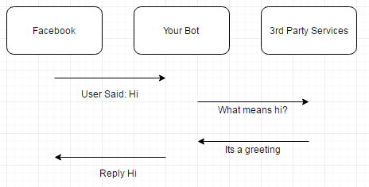
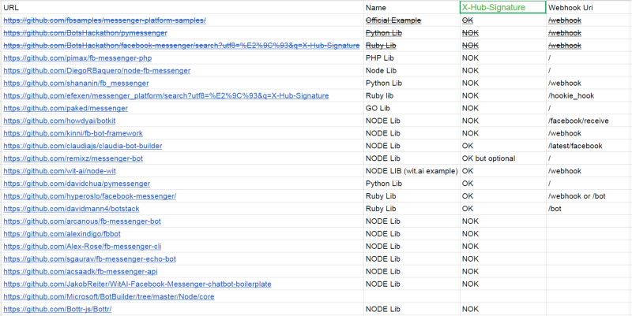

Bots estão a receber cada vez mais hype no mundo, especialmente entre desenvolvidores! Não sei bem se há muita gente aqui em Angola criando bots mas já se perguntou se eles são realmente seguros? Quais são as vulnerabilidades comuns entre as frameworks mais utlilizadas para desenvolvimento de bots?
Como funcionam os facebook bots?
Cada vez que você envia uma mensagem para o chat, o facebook cria uma solicitação HTTP para o seu web app. Esta solicitação HTTP (POST) contêm a sua mensagem. Aqui esta um exemplo.
após receber a mensagem o bot pode fazer pedidos externos para serviços com wit.ai ou api.ai para usar recursos como NLP (processamento de linguagem natural) e daí gerar uma resposta e enviar para o facebook. Facebook envia a resposta atraves do messenger.
O Problema
Se o teu bot esta usar imagens ou webviews poderá usar a ferramenta de inspecção do chrome e facilmente identificar o url do servidor que esta hospeder o seu web app. A maioria das libs usam /webhook como url para comunicar com facebook. Se encontrares o webhook podes finjir ser o facebook porque muitas das libs usam uma implementação errada do X-HUB Signature Header.
O Ataque
é possivel enviar spam para o webhook com mensagens falsificadas, que possibilitará você a ver informações como o seu 'user id'. Isso possibilitará enviar grandes quantidades de mensagens atraves do bot para uma conta do facebook.
Nota que a mensagem json acima é do tipo array e que é possivel você enviar várias mensagens como um único payload. O padrão para o tamanho máximo de envio para expressJS é 100 KB, que é equivalente a 600 mensagens. Isto é um problema: Poderá enviar uma solicitação de 100KB e emitir 600 solicitações do seu bot para o facebook e talvez outros 600 para servidores de terceiros. A maioria dos API's usam uma limitação de 1 solicitação / por segundo. Isto significa um pedido pode manter seu bot ocupado durante 10-20 minutos.
Prova de conceito
O David Mann, o homem responsável pela descoberta criou um modulo para metasploit para testares os teus bots.
Estas a desenvolver bots? Segurança é importante para ti? Quais são as políticas de segurança que estas a usar?